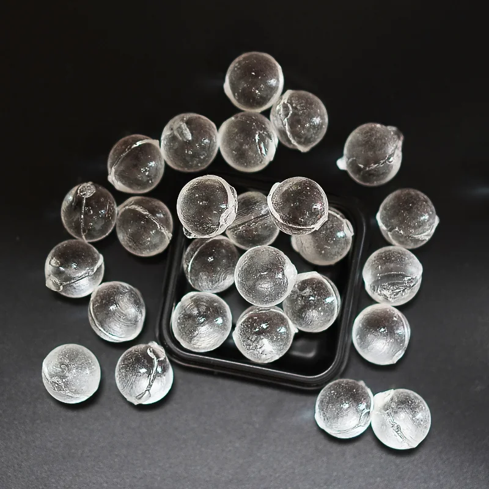
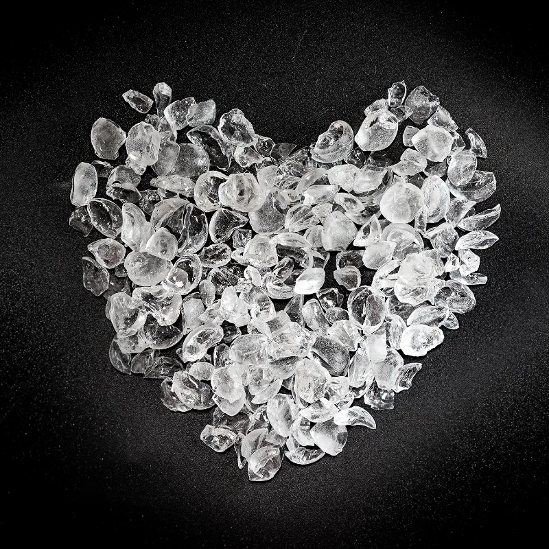
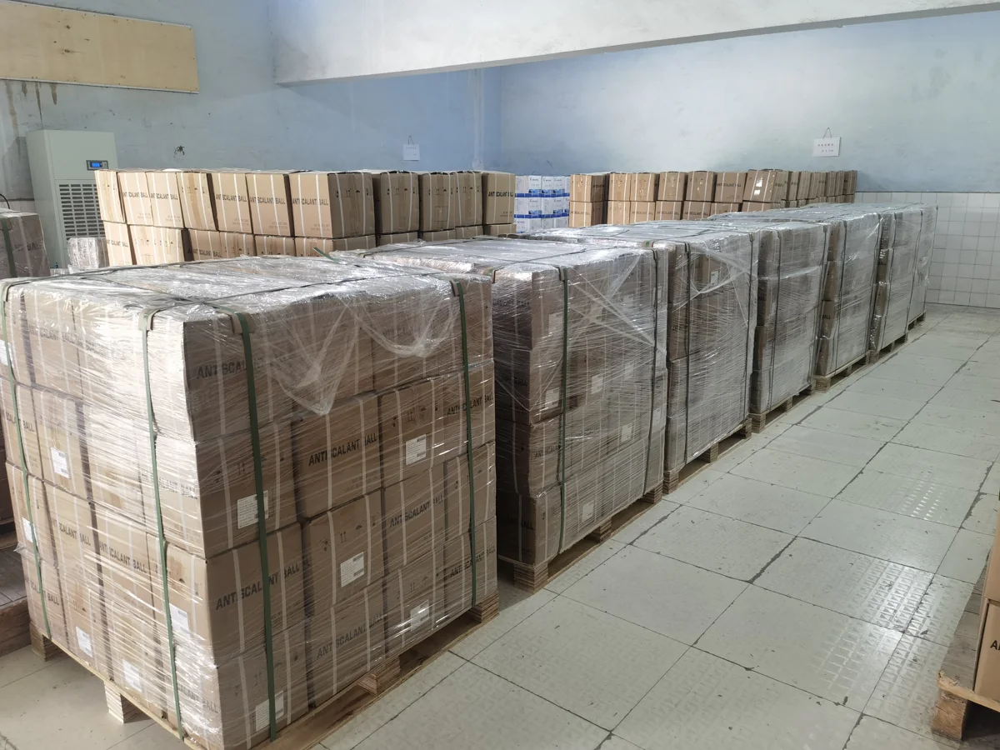

Forms and sizes
| Spherical balls | 19 mm; 10 mm; 3–8 mm |
|---|---|
| Broken particles | 6–12 mm; 4–10 mm |
| Other form | Powder |
| Customization | Size and form confirmed for the project |
Products / Siliphos Balls
OEM / ODM WATER-TREATMENT MEDIA
Polyphosphate-based scale-inhibitor media for projects that need a specified form, size and packaging plan. Confirm suitability against actual water quality, equipment and local requirements.

| Spherical balls | 19 mm; 10 mm; 3–8 mm |
|---|---|
| Broken particles | 6–12 mm; 4–10 mm |
| Other form | Powder |
| Customization | Size and form confirmed for the project |


Wood pallets, master cartons, small boxes and small bottles can be planned with the order. Confirm pack size, label artwork, destination and handling requirements before production.
Discuss raw-water conditions, equipment, intended use and local requirements before selecting a scale-inhibitor medium. This product page does not claim water softening, removal of existing scale, drinking-water suitability or guaranteed results.
Spherical balls, broken particles and powder are available in the listed ranges or as a project-specific request.
Yes. Confirm the required form, size range, intended equipment and package before quotation.
No softening, drinking-water suitability or performance outcome is claimed on this page. Confirm the application against actual water conditions.